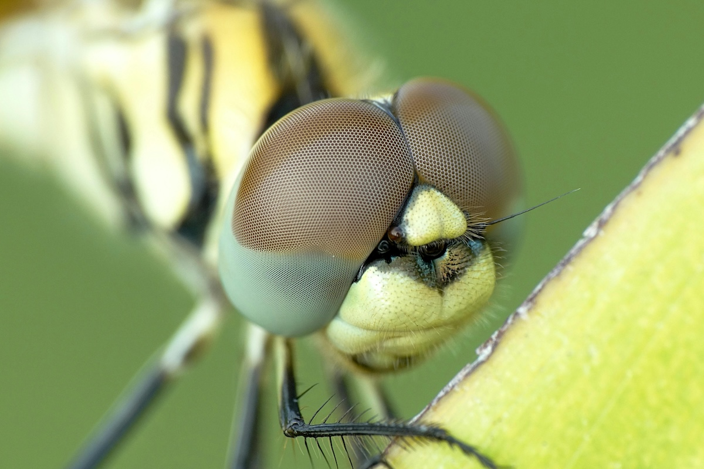

Makro Fotoğrafçılık: Küçük Dünyaları Büyük Gösterme Sanatı
Fotoğrafçılık, dünyayı farklı perspektiflerden görmemizi sağlayan büyüleyici bir sanat dalıdır. Bu perspektiflerden biri de makro fotoğrafçılıktır. Çıplak gözle fark edemediğimiz detayları gözler önüne seren bu teknik, doğanın en küçük güzelliklerini keşfetmemize olanak tanır. Makro fotoğrafçılık, sabır ve dikkat gerektiren bir uğraş olup, fotoğrafçının bakış açısını ve teknik becerilerini geliştirmesine yardımcı olur.
Makro Fotoğrafçılık Nedir?
Makro fotoğrafçılık, küçük nesneleri, detaylarını vurgulayarak büyük ölçekte görüntülemeyi sağlayan bir tekniktir. Genellikle 1:1 veya daha büyük büyütme oranlarıyla çekilen fotoğraflar, objelerin mikro dünyasına pencere açar. Böcekler, çiçekler, su damlaları ve hatta dokular, makro çekimlerin başlıca konularıdır. Bu çekimler, doğadaki detayları ortaya çıkararak, insan gözünün algılayamayacağı kadar küçük olan öğeleri görünür kılar.
Makro Fotoğrafçılığın Temel Ekipmanları
Başarılı makro fotoğraflar çekebilmek için özel ekipmanlara ihtiyaç duyulabilir. İşte bazı temel gereçler:
- Makro Lensler: 1:1 büyütme oranı sağlayan lensler, en iyi sonuçları verir. 50mm, 100mm veya 180mm gibi odak uzaklıklarına sahip makro lensler farklı kullanım alanlarına sahiptir. Daha uzun odak uzaklıkları, konunun daha uzaktan çekilmesine olanak tanıyarak, özellikle böcek gibi ürkek canlıları fotoğraflarken avantaj sağlar.
- 50mm makro lensler: Genel olarak sabit nesneleri ve stüdyo ortamında kullanılmak için uygundur.
- 100mm makro lensler: Daha fazla çekim mesafesi sunarak hareketli nesneleri rahatsız etmeden çekim yapmanıza imkan tanır.
- 180mm makro lensler: Uzak mesafeden detaylı çekimler yapabilmek için idealdir, özellikle böcek gibi hassas nesneler için tercih edilir.
- Ters Bağlantı Halkaları: Standart lensleri ters çevirerek makro çekim yapmayı sağlar. Bu yöntem, bütçesi sınırlı olanlar için uygun bir alternatiftir ve yaratıcı sonuçlar elde edilmesine yardımcı olabilir.
- Uzatma Tüpleri: Lens ile sensör arasındaki mesafeyi artırarak büyütme sağlar. Farklı uzunluklardaki uzatma tüpleri kullanılarak büyütme oranı değiştirilebilir.
- Tripod: Makro çekimlerde netliği artırmak için titremeyi önleyen bir ekipmandır. Makro çekimlerde en ufak bir hareket bile bulanıklığa neden olabileceği için sağlam ve stabil bir tripod kullanılması önerilir.
- Harici Işık Kaynakları: Daha iyi ışık kontrolü için flaş veya LED ışıklar kullanılabilir. Özellikle halka flaşlar, doğrudan konunun üzerine eşit ışık düşürerek gölgeleri minimize edebilir.
Makro Fotoğraf Çekim Teknikleri
Makro fotoğrafçılığa başlarken dikkat edilmesi gereken bazı önemli teknikler vardır:
- Düşük ISO Kullanımı: Gürültüyü (noise) en aza indirmek için mümkün olduğunca düşük ISO tercih edilmelidir. ISO 100 veya 200 gibi düşük değerler kullanılmalıdır.
- Diyafram Kontrolü: f/8 – f/16 gibi dar diyafram açıklıkları kullanılarak daha fazla alan derinliği elde edilebilir. Bu, konunun daha fazla kısmının net olmasını sağlar.
- Manuel Odaklama: Netliği en iyi şekilde sağlamak için manuel odak tercih edilmelidir. Otomatik odaklama, makro çekimlerde hassasiyet konusunda yetersiz kalabilir.
- Stabilizasyon: Küçük hareketler bile bulanıklığa yol açabileceğinden, tripod ve uzaktan deklanşör kullanılmalıdır. Ayrıca, makine içi titreşim azaltma sistemleri de yardımcı olabilir.
- Yumuşak Işık Kullanımı: Direkt güneş ışığı sert gölgeler oluşturabileceğinden, bulutlu günlerde veya yumuşatıcı difüzörler kullanılarak çekim yapılması önerilir.
- Odak İstifleme (Focus Stacking): Makro çekimlerde alan derinliği çok sığ olduğu için birden fazla farklı odak noktasında çekilmiş fotoğrafların yazılımla birleştirilmesi, daha geniş bir alanın net görünmesini sağlar.
İlham Veren Makro Konuları
Makro fotoğrafçılığa yeni başlıyorsanız aşağıdaki konular ilginizi çekebilir:
- Böcekler ve Kelebekler: Doğanın en detaylı canlıları makro lensle harika görseller sunar. Örneğin, kelebeklerin kanatlarındaki ince desenler veya karıncaların yüz hatları oldukça etkileyici olabilir.
- Çiçekler ve Bitkiler: Petallerin dokusu, polenlerin detayları büyüleyicidir. Özellikle çiçeklerin merkez kısımlarındaki simetrik desenler estetik bir görüntü sunar.
- Su Damlaları: Yansıma ve kırılmalarla estetik görüntüler elde edilebilir. Su damlaları içinde çevrenin yansıması, ilginç kompozisyonlar yaratabilir.
- Günlük Objeler: Madeni paralar, kumaş dokuları veya gözler gibi nesneler yeni bir bakış açısı kazandırabilir. Örneğin, bir kalemin ucundaki aşınmalar veya bir kahve tanesinin yüzey dokusu sıradan nesneleri büyüleyici hale getirebilir.
- Gıda Fotoğrafçılığı: Meyve ve sebzelerin yüzey detayları, makro çekimlerle olağanüstü görseller yaratabilir. Özellikle çilek, nar veya turunçgillerin iç yapıları oldukça ilgi çekicidir.
Kompozisyon Önerileri
Makro fotoğrafçılıkta dikkat edilmesi gereken bir diğer unsur da kompozisyondur. İyi bir kompozisyon oluşturmak için şu ipuçlarını takip edebilirsiniz:
- Alan derinliğini kontrol edin: Makro çekimlerde alan derinliği çok sınırlı olabilir. Diyafram değerlerini dikkatli kullanarak ana konunun net, arka planın ise yumuşak olmasını sağlayabilirsiniz. F/2.8 veya F/5.6 gibi değerlerle denemeler yapabilirsiniz.
- Altın oran ve 1/3 kuralını kullanın: Fotoğrafınızda dikkat çeken nesneyi kadrajın merkezine almak yerine, 1/3 kuralına göre yerleştirerek daha dengeli ve estetik bir görünüm elde edebilirsiniz.
- Arka planı sade tutun: Dikkat dağıtıcı unsurları en aza indirerek fotoğrafın ana konusunu öne çıkarabilirsiniz.
- Açılarla oynayın: Nesneyi farklı açılardan çekerek ilginç ve etkileyici sonuçlar elde edebilirsiniz.
- Renk kontrastlarını kullanın: Arka plan ile ana nesnenin renklerini kontrast oluşturacak şekilde seçerek dikkat çekici kompozisyonlar yaratabilirsiniz.
Sonuç
Makro fotoğrafçılık, detaylara odaklanarak dünyayı daha yakından keşfetme fırsatı sunar. Sabır ve pratikle, günlük yaşamda fark edemediğimiz harikaları ortaya çıkarabilirsiniz. Kameranızı alın ve mikroskobik dünyaya adım atın! Küçük detayları keşfettikçe, fotoğrafçılık yeteneklerinizin geliştiğini fark edeceksiniz. Unutmayın, doğa içinde keşfedilecek sayısız minyatür güzellik saklıyor!